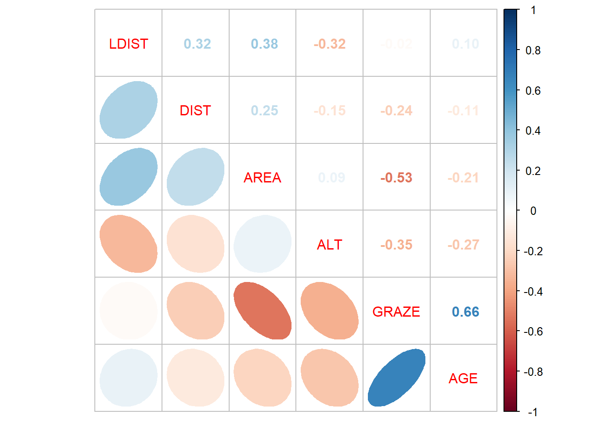
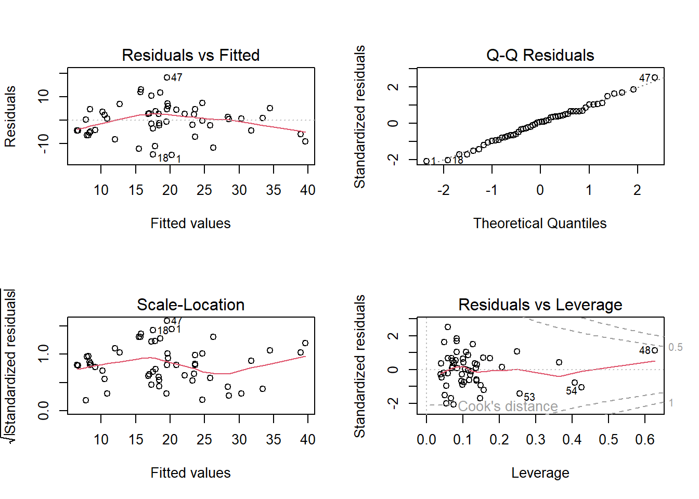
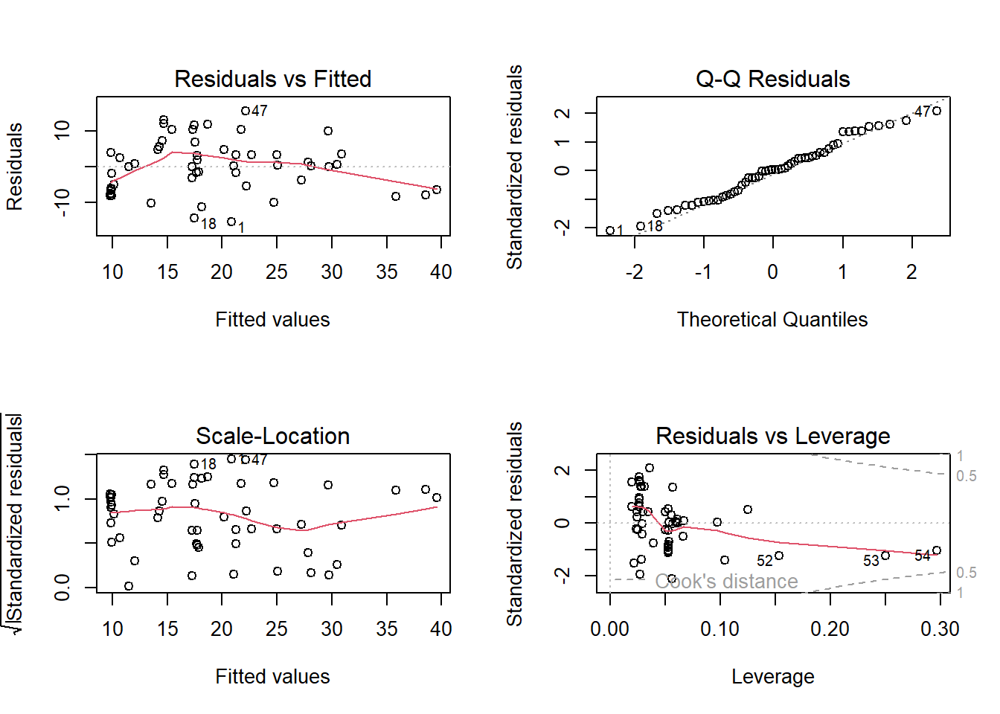
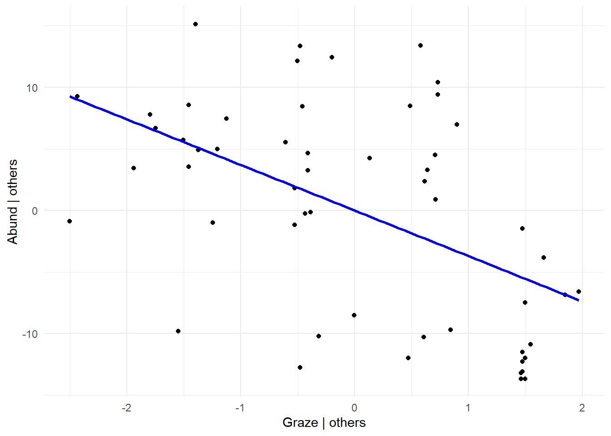
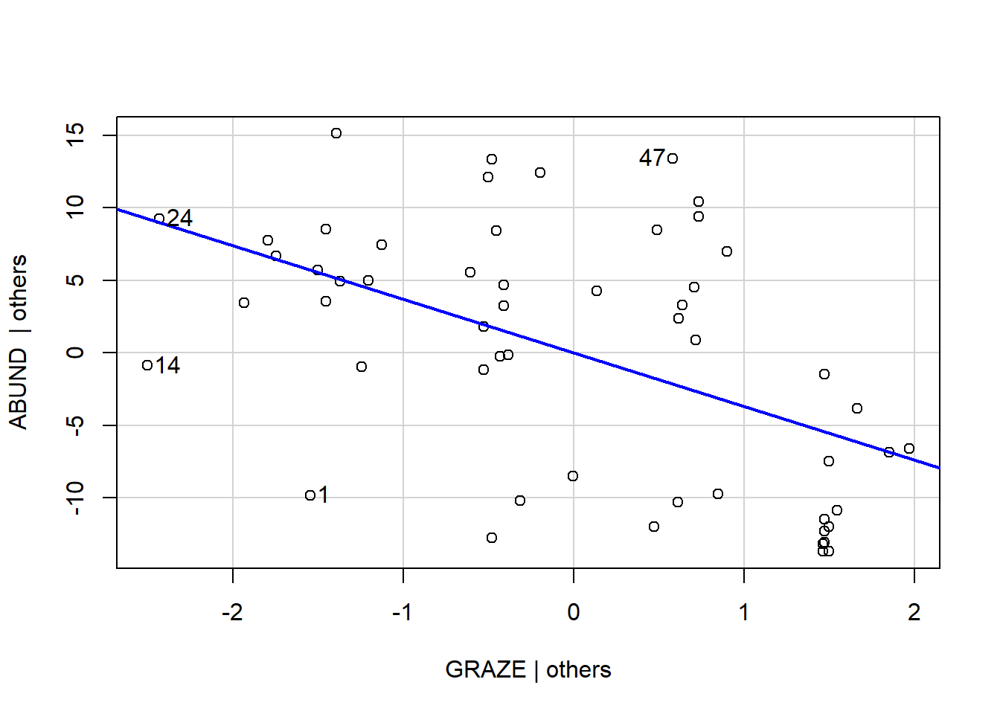
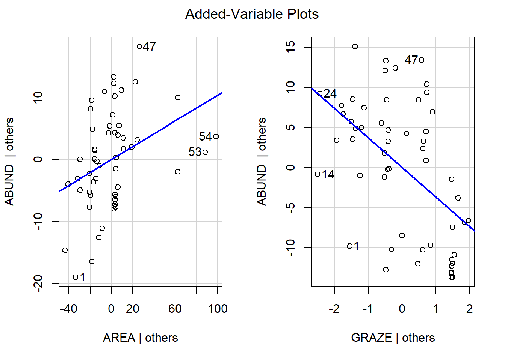

ABUND AREA AGE DIST
Min. : 1.50 Min. : 0.10 Min. : 8.00 Min. : 26.0
1st Qu.:11.80 1st Qu.: 2.00 1st Qu.:18.00 1st Qu.: 93.0
Median :20.40 Median : 7.00 Median :21.50 Median : 221.0
Mean :19.12 Mean : 21.02 Mean :34.31 Mean : 236.9
3rd Qu.:27.75 3rd Qu.: 25.00 3rd Qu.:57.50 3rd Qu.: 311.0
Max. :39.60 Max. :144.00 Max. :94.00 Max. :1427.0
LDIST GRAZE ALT
Min. : 26.0 Min. :1.000 Min. : 60.0
1st Qu.: 156.8 1st Qu.:2.000 1st Qu.:120.0
Median : 338.5 Median :3.000 Median :140.0
Mean : 729.8 Mean :3.056 Mean :143.3
3rd Qu.: 854.0 3rd Qu.:4.000 3rd Qu.:175.0
Max. :4426.0 Max. :5.000 Max. :220.0
Korrelation zwischen den Prädiktoren
# Wir setzen die Schwelle bei |0.7|# Korrelationen rechnen details siehe: "?cor"cor(loyn[, 2:7])
AREA AGE DIST LDIST GRAZE ALT
AREA 1.00000000 -0.21265343 0.2475258 0.37733668 -0.53118408 0.08935845
AGE -0.21265343 1.00000000 -0.1132931 0.09930812 0.66129235 -0.27242916
DIST 0.24752583 -0.11329311 1.0000000 0.31814676 -0.24330458 -0.15112326
LDIST 0.37733668 0.09930812 0.3181468 1.00000000 -0.02373893 -0.32359264
GRAZE -0.53118408 0.66129235 -0.2433046 -0.02373893 1.00000000 -0.35362007
ALT 0.08935845 -0.27242916 -0.1511233 -0.32359264 -0.35362007 1.00000000
# oder mit Namen der columns resp. variablencor <- loyn |>subset(select = AREA:ALT) |>cor()# Korrelationen Visualisierenp_load("corrplot")corrplot.mixed(cor, lower ="ellipse", upper ="number", order ="AOE")

cor[abs(cor)<0.7] <-0cor
AREA AGE DIST LDIST GRAZE ALT
AREA 1 0 0 0 0 0
AGE 0 1 0 0 0 0
DIST 0 0 1 0 0 0
LDIST 0 0 0 1 0 0
GRAZE 0 0 0 0 1 0
ALT 0 0 0 0 0 1
-> Keine Korrelation ist >|0.7|, so können wir alle Prädiktoren “behalten”. Aber es gilt zu beachten, dass GRAZE ziemlich stark |>0.6| mit AGE korreliert ist
lm_1 <-lm(ABUND ~ AGE + AREA + DIST + LDIST + GRAZE + ALT, data = loyn)par(mfrow =c(2, 2))plot(lm_1)

-> Plot sieht zwar OK aus, aber mit 6 Prädiktoren für |<60| Beobachtungen ist das Modell wohl “overfitted”
# Andere Vatiante, um korrelierte Prädiktoren zu finden (üblicher Schwellenwert VIF = 5)p_load("car")vif(lm_1)
AGE AREA DIST LDIST GRAZE ALT
1.874993 1.763605 1.220125 1.465810 2.784577 1.346572
Modellselektion
summary(lm_1)
Call:
lm(formula = ABUND ~ AGE + AREA + DIST + LDIST + GRAZE + ALT,
data = loyn)
Residuals:
Min 1Q Median 3Q Max
-14.8828 -4.4751 0.5753 4.5738 18.1946
Coefficients:
Estimate Std. Error t value Pr(>|t|)
(Intercept) 1.749e+01 6.599e+00 2.650 0.0109 *
AGE -9.155e-02 5.430e-02 -1.686 0.0985 .
AREA 1.232e-01 4.173e-02 2.953 0.0049 **
DIST 3.751e-03 5.083e-03 0.738 0.4642
LDIST -5.331e-05 1.335e-03 -0.040 0.9683
GRAZE -1.783e+00 1.181e+00 -1.510 0.1378
ALT 4.731e-02 2.900e-02 1.631 0.1095
---
Signif. codes: 0 '***' 0.001 '**' 0.01 '*' 0.05 '.' 0.1 ' ' 1
Residual standard error: 7.451 on 47 degrees of freedom
Multiple R-squared: 0.5722, Adjusted R-squared: 0.5176
F-statistic: 10.48 on 6 and 47 DF, p-value: 2.344e-07
drop1(lm_1, test ="F")
Single term deletions
Model:
ABUND ~ AGE + AREA + DIST + LDIST + GRAZE + ALT
Df Sum of Sq RSS AIC F value Pr(>F)
<none> 2609.5 223.41
AGE 1 157.79 2767.3 224.58 2.8419 0.098466 .
AREA 1 484.08 3093.6 230.60 8.7187 0.004904 **
DIST 1 30.24 2639.8 222.03 0.5447 0.464169
LDIST 1 0.09 2609.6 221.41 0.0016 0.968322
GRAZE 1 126.56 2736.1 223.97 2.2794 0.137794
ALT 1 147.76 2757.3 224.38 2.6612 0.109504
---
Signif. codes: 0 '***' 0.001 '**' 0.01 '*' 0.05 '.' 0.1 ' ' 1
# Prädiktor mit grösstem p-Wert entfernenlm_2 <-lm(ABUND ~ AGE + AREA + DIST + GRAZE + ALT, data = loyn)# oderlm_2 <-update(lm_1, ~ . - LDIST) # Oben beschriebener Schritt wiederholten bis nur noch signifikante Prädiktoren im Modell sinddrop1(lm_2, test ="F")
Single term deletions
Model:
ABUND ~ AGE + AREA + DIST + GRAZE + ALT
Df Sum of Sq RSS AIC F value Pr(>F)
<none> 2609.6 221.41
AGE 1 158.71 2768.3 222.60 2.9192 0.093989 .
AREA 1 563.32 3172.9 229.97 10.3614 0.002309 **
DIST 1 31.10 2640.7 220.05 0.5721 0.453139
GRAZE 1 127.97 2737.6 222.00 2.3539 0.131535
ALT 1 163.04 2772.6 222.68 2.9988 0.089749 .
---
Signif. codes: 0 '***' 0.001 '**' 0.01 '*' 0.05 '.' 0.1 ' ' 1
lm_3 <-update(lm_2, ~ . - DIST)drop1(lm_3, test ="F")
Single term deletions
Model:
ABUND ~ AGE + AREA + GRAZE + ALT
Df Sum of Sq RSS AIC F value Pr(>F)
<none> 2640.7 220.05
AGE 1 154.79 2795.5 221.13 2.8722 0.096468 .
AREA 1 599.14 3239.8 229.09 11.1174 0.001635 **
GRAZE 1 158.71 2799.4 221.20 2.9449 0.092467 .
ALT 1 138.17 2778.9 220.80 2.5639 0.115759
---
Signif. codes: 0 '***' 0.001 '**' 0.01 '*' 0.05 '.' 0.1 ' ' 1
lm_4 <-update(lm_3, ~ . - ALT)drop1(lm_4, test ="F")
Single term deletions
Model:
ABUND ~ AGE + AREA + GRAZE
Df Sum of Sq RSS AIC F value Pr(>F)
<none> 2778.9 220.80
AGE 1 163.46 2942.3 221.89 2.9412 0.09254 .
AREA 1 541.87 3320.8 228.42 9.7497 0.00298 **
GRAZE 1 264.51 3043.4 223.71 4.7593 0.03387 *
---
Signif. codes: 0 '***' 0.001 '**' 0.01 '*' 0.05 '.' 0.1 ' ' 1
lm_5 <-update(lm_4, ~ . - AGE)drop1(lm_5, test ="F")
Single term deletions
Model:
ABUND ~ AREA + GRAZE
Df Sum of Sq RSS AIC F value Pr(>F)
<none> 2942.3 221.89
AREA 1 440.79 3383.1 227.43 7.6403 0.007923 **
GRAZE 1 1089.71 4032.1 236.91 18.8881 6.622e-05 ***
---
Signif. codes: 0 '***' 0.001 '**' 0.01 '*' 0.05 '.' 0.1 ' ' 1
summary(lm_5)
Call:
lm(formula = ABUND ~ AREA + GRAZE, data = loyn)
Residuals:
Min 1Q Median 3Q Max
-15.5390 -6.3337 0.1902 4.4737 15.5567
Coefficients:
Estimate Std. Error t value Pr(>|t|)
(Intercept) 28.2303 3.2660 8.644 1.45e-11 ***
AREA 0.1045 0.0378 2.764 0.00792 **
GRAZE -3.7009 0.8516 -4.346 6.62e-05 ***
---
Signif. codes: 0 '***' 0.001 '**' 0.01 '*' 0.05 '.' 0.1 ' ' 1
Residual standard error: 7.596 on 51 degrees of freedom
Multiple R-squared: 0.5177, Adjusted R-squared: 0.4987
F-statistic: 27.37 on 2 and 51 DF, p-value: 8.425e-09
par(mfrow =c(2, 2))plot(lm_5)

-> das minimal adäquate Modell enthält noch zwei Prädiktoren (AREA; GRAZE) und dessen Residualplots sehen ok aus.
Hierarchical partitioning
Wir können auch schauen wie bedeutsam die einzelnen Variablen sind:
p_load("relaimpo")# Berechnenmetrics <-calc.relimp(lm_1, type =c("lmg", "first"))cbind(I = metrics$lmg, J = metrics$first - metrics$lmg, Total = metrics$first)
I J Total
AGE 0.11351597 0.1539730784 0.267489048
AREA 0.17941694 0.1596031200 0.339020063
DIST 0.01986977 0.0307746481 0.050644413
LDIST 0.00827103 -0.0007561283 0.007514902
GRAZE 0.19052943 0.2548693094 0.445398737
ALT 0.06061495 0.0610176713 0.121632624
-> auch hier haben AREA und GRAZE die höchsten Werte (und an dritter Stelle AGE, der mit GRAZE am stärksten korreliert ist)
Plot partielle regressionen
# Beispiel GRAZElm_abund <-lm(ABUND ~ AREA, data = loyn)lm_graze <-lm(GRAZE ~ AREA, data = loyn)abundance_resid <-resid(lm_abund)graze_resid <-resid(lm_graze)p_load(ggplot2)ggplot(data =NULL, aes(x = graze_resid, y = abundance_resid)) +geom_point() +geom_smooth(method ="lm", se =FALSE, color ="blue") +labs(x ="Graze | others", y ="Abund | others",title ="Partial Regression Plot with Quadratic Term and Regression Line") +theme_minimal()

# Einfacher geht es mit der function avPlots (package "car"). Nachteil ist, dass mit der funktion anders als mit der Methode oben, keine quadratische prädiktoren dargestellt werden können par(mfrow =c(1, 1))avPlots(lm_5, ~GRAZE, ask = F)

#Für alle prädktoren im ModellavPlots(lm_5, layout =c(1, 2) )

Multimodel inference
p_load("MuMIn")global_model <-lm(ABUND ~ AGE + AREA + DIST + LDIST + GRAZE + ALT, data = loyn)options(na.action ="na.fail")allmodels <-dredge(global_model)allmodels
# Wir haben mehre Modelle mit einem delta AICc <2, das heisst wir haben nicht ein eindeutig bestes Modell (welches wir mit der funktion "get.models" selektieren könnten)# Variable importancesw(allmodels)
AREA GRAZE AGE ALT DIST LDIST
Sum of weights: 0.97 0.76 0.66 0.58 0.27 0.23
N containing models: 32 32 32 32 32 32
-> Auch mit dieser Sichtweise sind AREA und GRAZE die wichtigste Prädiktoren
# Model averagingavgmodel <-model.avg(allmodels)summary(avgmodel)
(Intercept) AGE ALT AREA GRAZE DIST
full 21.2504 -0.07527122 0.02811021 0.1235275 -2.079840 0.0009132418
subset 21.2504 -0.11326991 0.04817829 0.1275241 -2.751453 0.0034009585
LDIST
full -4.925166e-05
subset -2.128051e-04
# Confindence intervalsconfint(avgmodel)
2.5 % 97.5 %
(Intercept) 6.319949053 36.180858723
AGE -0.230460847 0.003921031
ALT -0.008022574 0.104379146
AREA 0.042396229 0.212651977
GRAZE -5.293247097 -0.209659662
DIST -0.006916400 0.013718317
LDIST -0.002974830 0.002549220